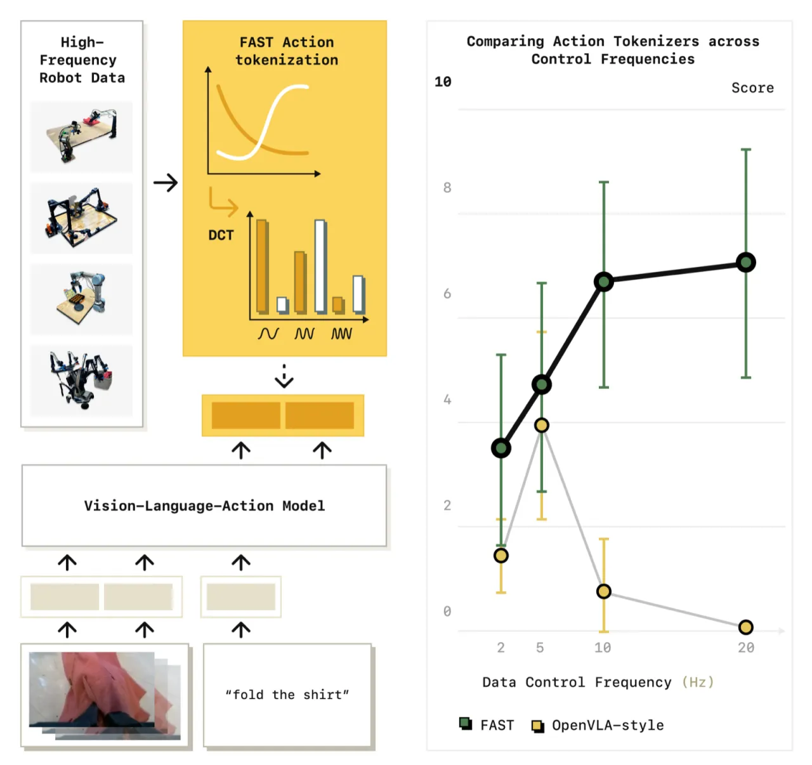
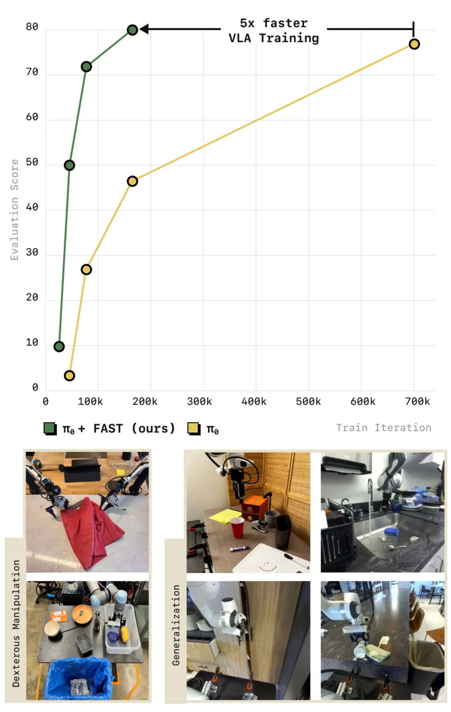
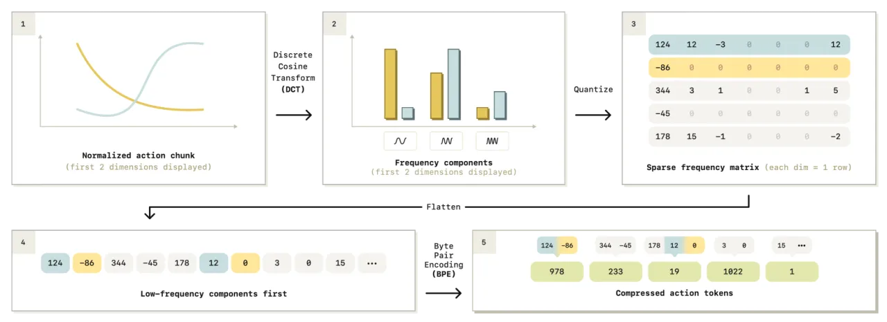
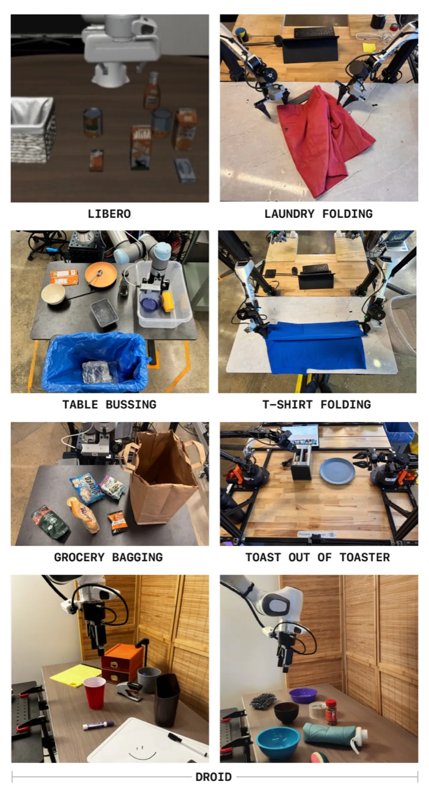
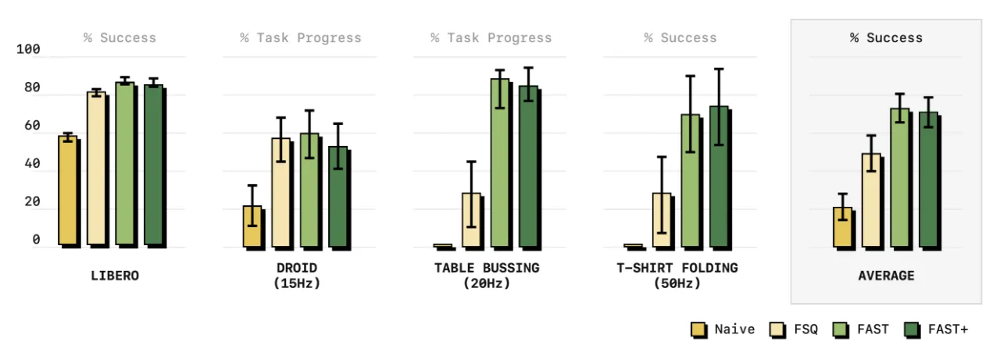
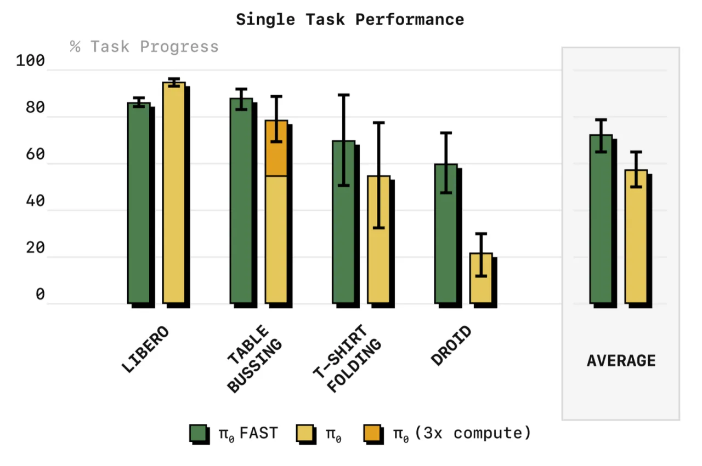
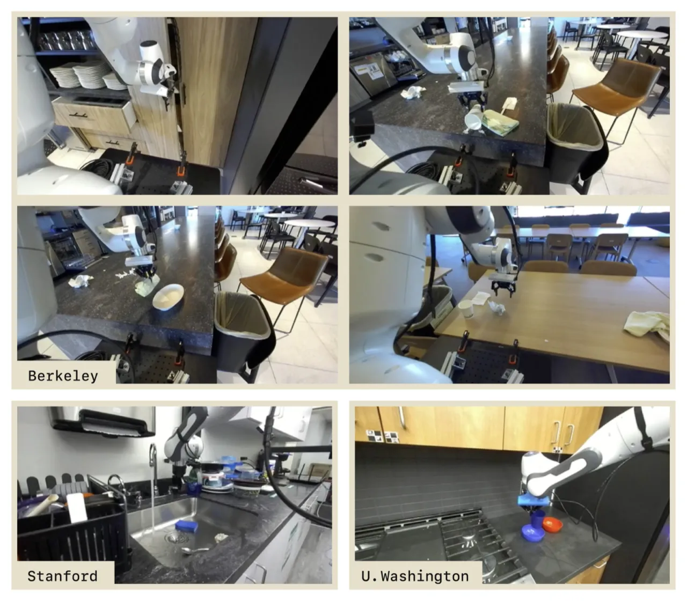

本文提出 FAST（Frequency-space Action Sequence Tokenization），一种基于离散余弦变换（DCT）与字节对编码（BPE）的机器人动作压缩分词方案。FAST 解决了当前视觉-语言-动作（VLA）模型在高频、高灵巧度任务上的根本瓶颈——朴素的 binning 分词产生高度相关的动作 token，严重削弱自回归预测的有效学习信号。配合 π₀ 模型，FAST 在性能匹配扩散基线的同时，将训练所需 GPU 时时间压缩至 1/5。
现有 VLA 模型（如 OpenVLA）使用朴素的 per-dimension per-timestep binning 对连续动作离散化。当机器人控制频率升高（例如折叠衣物需要 50 Hz）或任务需要精细灵巧操作时，这种方案产生数百个高度相关 token，使得自回归 next-token prediction 形同虚设——模型退化为简单地复制最近一个动作 token。
"Highly correlated action tokens diminish the effectiveness of the next token prediction objective used in autoregressive VLAs."


研究者在一个简单的 table-top manipulation 任务上系统研究了采样率对不同分词策略的影响。随着控制频率升高，使用 binning 分词训练的策略"produce increasingly poor predictions as we increase the sampling frequency"，而基于 DCT 的 FAST 在各频率下均保持稳定表现。
FAST 的核心思想是将动作序列视为信号而非独立离散点——先用 DCT 转换到频域分离低频与高频信息，再用 BPE 压缩稀疏系数，得到少量、低相关性、语义丰富的 token。整个流程完全不需要神经网络，可离线预处理，也可通用化迁移到新机器人。

使用 1st 和 99th 百分位数对动作进行分位数归一化，映射到 [−1, 1]，有效处理大规模数据集中的异常值，保证 DCT 系数的数值稳定性。
对每个动作维度独立做 DCT，将时域动作序列转换到频域。低频系数捕捉运动的整体形状，高频系数捕捉细节变化。自回归解码时先预测低频成分，"leads to more stable policy rollouts"。
用比例参数 γ 对 DCT 系数取整，再按"频率优先"顺序展开成一维序列。高频系数通常接近零，展开后形成大量重复的零值串，BPE 算法可以高效压缩这些稀疏模式，大幅减少 token 数量。
在约 100 万条来自多种机器人（单臂、双臂、移动操作臂）的真实 1 秒动作序列上离线训练 BPE 词表，得到通用分词器 FAST+。在未见机器人形态和控制频率上可实现 "2× reduction across all datasets"。

将 FAST 分词器接入物理智能公司的 π₀ VLA 模型（基于预训练视觉-语言模型的自回归策略），替换原有 binning 分词，无需改变模型架构。π₀-FAST 在大规模数据集上训练时收敛显著更快，且能处理此前扩散版本才能胜任的高频灵巧任务。
实验涵盖：(1) token 压缩率对比；(2) 在多个真实机器人任务上与朴素 binning 和扩散基线的性能对比；(3) FAST+ 通用分词器验证；(4) 大规模泛化策略训练；(5) OpenVLA 主干上的消融实验。评测在 Physical Intelligence 实验室真实机器人硬件上进行。
| 数据集 | 控制频率 | 朴素 token 数 | FAST token 数 | 压缩比 |
|---|---|---|---|---|
| BridgeV2 | 5 Hz | 35 | 20 | 1.75× |
| DROID | 15 Hz | 105 | 29 | 3.6× |
| Table Bussing | 20 Hz | 140 | 28 | 5.0× |
| Shirt Folding | 50 Hz | 700 | 53 | 13.2× |



在 10,000 小时多样化机器人数据上训练的 π₀-FAST 与扩散版 π₀ 在洗衣折叠、T 恤折叠、杂货装袋、烤面包任务上性能相当，即"matches the performance of diffusion π₀"，同时训练 GPU 时间仅为扩散基线的 1/5（"5x fewer GPU hours for training than the π₀ model"）。
论文 Section VI-E 明确指出："One current limitation of the autoregressive VLA is its inference speed...the π₀ model with FAST tokenization needs approximately 750ms of inference time per chunk, since it must perform more autoregressive decoding steps (typically 30-60 action tokens...vs. 10 diffusion steps)."（750 ms vs. 扩散版的 100 ms on NVIDIA 4090 GPU，约慢 7.5 倍）。这使得实时、高速机器人控制场景目前难以满足要求，实验中也不得不降低评测吞吐量。
DCT 量化步骤受比例参数 γ 控制，量化并非完全无损——较高的压缩率会牺牲动作精度。具体在精密操作任务中此权衡的影响程度，论文未做系统分析。
所有在线真实机器人评测均集中于固定基座的桌面操作任务；移动机器人、灵巧手、类人机器人等形态仅做了离线数据分析，未在实机上验证策略部署效果。
论文自述"the jury on the best VLA architecture is still out"——自回归 vs. 扩散架构各有优劣，FAST 主要解决了分词瓶颈，但更深层的架构设计问题（如何最优融合视觉、语言、动作模态）仍属开放问题。